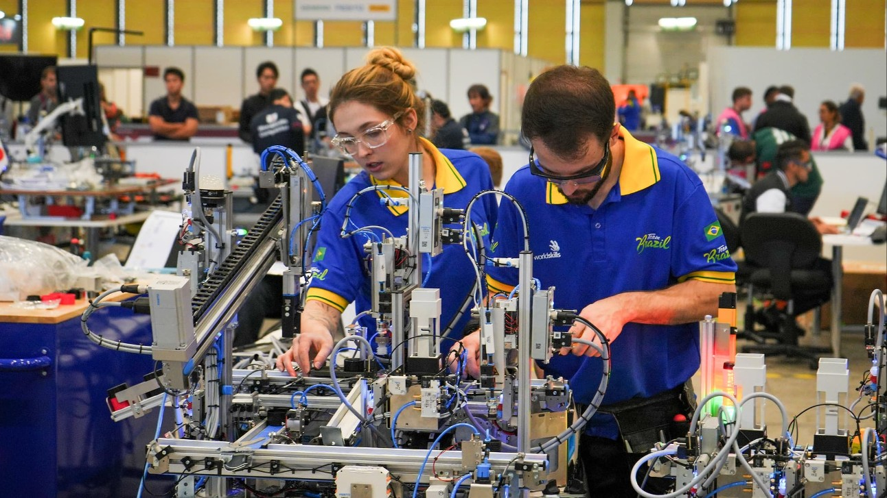
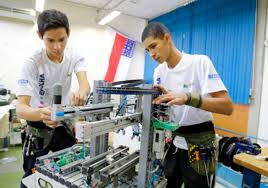
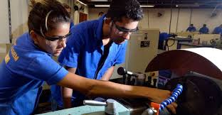
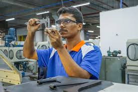
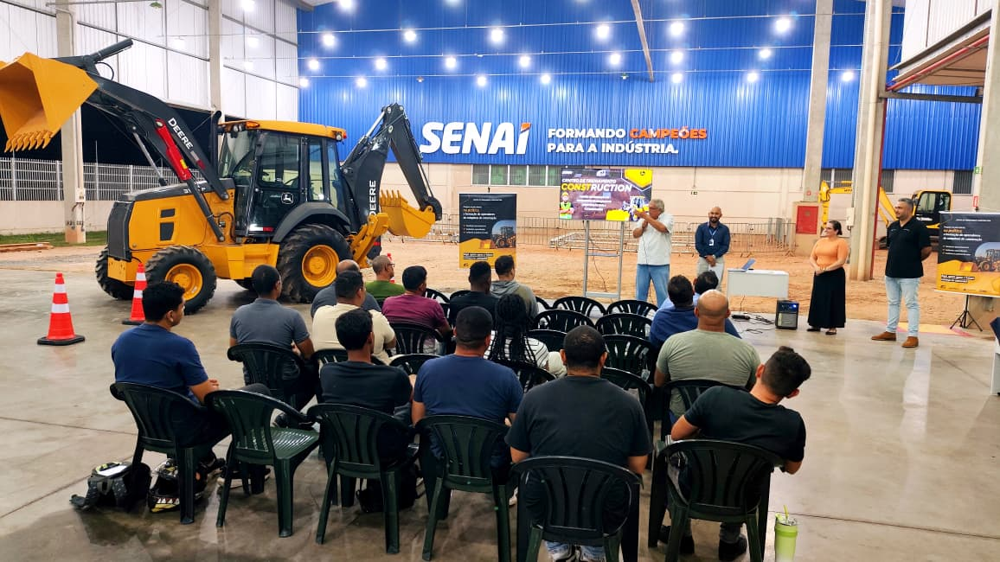
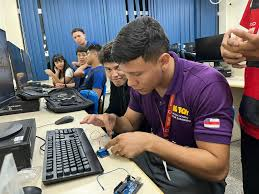
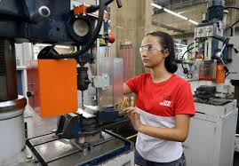

Sou estudante do SESI SENAI, inserido em um ambiente de formação voltado para inovação, tecnologia e desenvolvimento industrial.
Minha trajetória é construída com base em aprendizado prático, resolução de problemas reais e desenvolvimento de projetos que simulam desafios do mercado de trabalho. Tenho foco em programação, desenvolvimento web e lógica computacional, sempre buscando evoluir minhas habilidades técnicas e criativas.
Ao longo da minha formação, venho desenvolvendo projetos que envolvem criação de interfaces, estruturação de sistemas e aplicação de conceitos tecnológicos voltados tanto para o meio digital quanto para soluções industriais.
Mais do que apenas aprender, meu objetivo é aplicar conhecimento para criar soluções eficientes, funcionais e inovadoras, acompanhando a constante evolução da tecnologia.

Conheça meus últimos projetos





